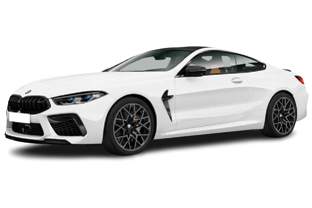
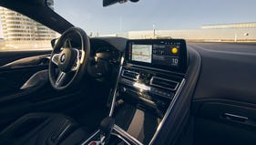
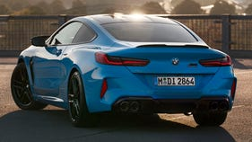
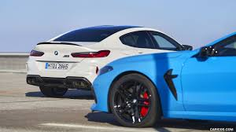

BMW
M8 COUPE
The new BMW M8 Gran Competition Coupé* and the new BMW M8
Gran Coupé combine pure M genes with supreme
exclusivity. Innovative technologies such as BMW M Mode
and Adaptive M suspension ensure unparalleled driving
dynamics. The latest version of the M TwinPower Turbo
8-cylinder petrol engine with up to 460 kW (625 hp)
guarantees performance in keeping with the latest
standards. The BMW M8 is the perfect symbiosis of pure
sportiness and exquisite luxury.
Choose your color

Handle it like a pro.
standard Active M Differential automatically reacts to
driving
conditions for more traction in real time. And the
intelligent M
xDrive allows you to adapt power distribution with
distinct 4WD,
4WD Sport, and 2WD modes. The standard 6-piston front M
compound
brakes are connected to BMW’s Integrated Brake System
for adjustable
responsiveness and feel. Choose black or red calipers –
or upgrade to
gold-calipered Carbon Ceramic brakes.
M POWER.
The latest version of the M TwinPower Turbo
8-cylinder petrol
engine guarantees performance in keeping with
the latest standards.
In the BMW M8 Competition Coupé, the
high-revving unit develops
an output of 460 kW (625 hp). The two
turbochargers stand out
thanks to their cross-cylinder bank exhaust
manifold with optimum
response characteristics. The V8 engine is also
designed for
extreme loads on the race track.
THE M8
BMW M8 Coupé and M8 Competition
Coupé
2025 BMW M8 Gran Coupe




MSRP
$140,975–$152,175
Adaptive M suspension
Professional.
In addition to characteristic M driving pleasure,
the adaptive M suspension Professional promises
comfortable everyday usability. The running gear
concept includes electronically controlled shock
absorbers, active stabilisers and Integral Active
Steering. Active roll stabilisation with active
rolling comfort counteracts side-to-side movements
of the body – when cornering or driving over
potholes and other obstacles. The advantages of this
system are especially evident when using a
particularly dynamic driving style: the vehicle
becomes significantly more agile with easier
cornering. In addition, the absorption of lateral
forces increases comfort for the passengers in the
second row of seats. Integral Active Steering also
supports more dynamic and safer driving dynamics. At
higher speeds, the rear wheels turn parallel to the
front wheels to stabilise the vehicle. In the lower
speed range, the rear wheels steer in the opposite
direction, making your vehicle more agile.
8-speed M Steptronic sport transmission.
From smooth sailing to dynamic driving with very
sporty gear changes: The fourth-generation 8-speed M
Steptronic sport transmission puts a wide range at
your disposal. In addition to automatic gear
selection, you also have the option of sporty manual
gear shifts via paddles on the steering wheel. In
SPORT mode and by actuating the electronic selector
lever (switch: S/M), experience gear shifts that are
configured for the best possible performance. The
sporting character has two elements: The first is
that the engine always maintains a high engine speed
range at which it can access plenty of power output.
The second element shortens the switching sequences
even further. The Launch Control function permits
maximum acceleration from a standing start. When set
to automatic mode, the gear selection adapts itself
to suit individual driving styles. In manual mode,
however, an optimum shift indicator gives you
recommendations for efficient driving. The Shift
Lights (in the instrument cluster and on the BMW
Head-up display) also help in highly dynamic driving
in the upper engine speed range. At high speeds, the
eighth gear reduces engine speed and fuel
consumption. This is also where the powerful
converter clutch comes into play. In short: The
8-speed M Steptronic sport transmission of the
fourth generation works together with the engine to
deliver smooth gear shifts and top levels of power
delivery and shift comfort as well as impressive
efficiency.
M Sport brakes.
The bespoke M Sport brakes comprise six-piston,
fixed-calliper brakes at the front and
single-piston, floating-calliper units at the rear.
The system employs newly improved lightweight brake
discs that strike an even finer balance between
performance and weight and have been purpose
engineered to handle the elevated dynamic
performance capabilities of the BMW XM.
M Setup.
For plug-in hybrid: At temperatures below minus 10
degrees Celsius,
the fully electric drive system is only available
after a few kilometres
of driving, once the battery has heated to
operational temperature.
Integrated M specific braking system.
The latest-generation integrated braking system
featured in the BMW XM generates a degree of
stopping power that is matched exactly to the
driver’s inputs, while also producing consistent
pedal feel. The M specific version of the integrated
braking system presents the driver with two pedal
feel settings, allowing them to choose between more
comfort-oriented or very direct execution of brake
pedal inputs in the M Setup menu.
M Sport differential.
The M Sport differential delivers the best possible
performance on the road. It variably distributes the
driving power between the rear wheels thus improving
traction and driving stability in various situations
– be it when accelerating out of bends, at high
cornering speeds or with differing road conditions.